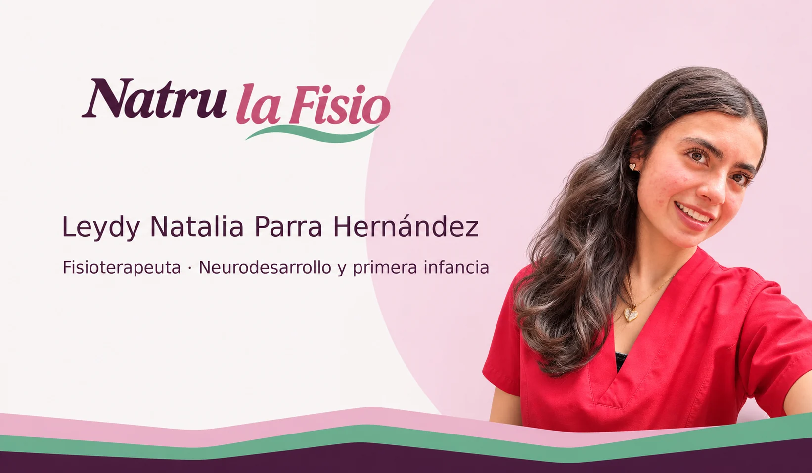
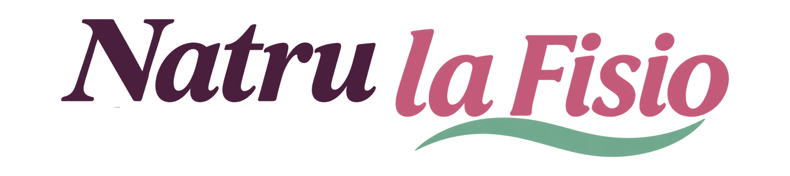
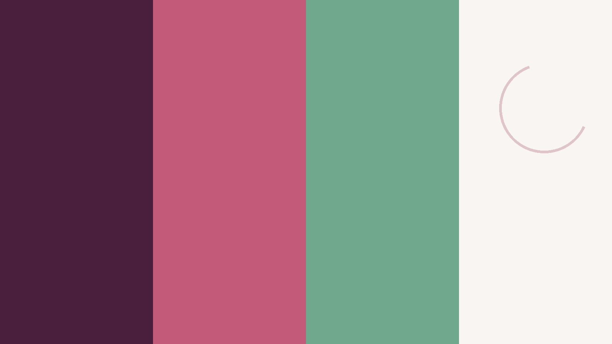
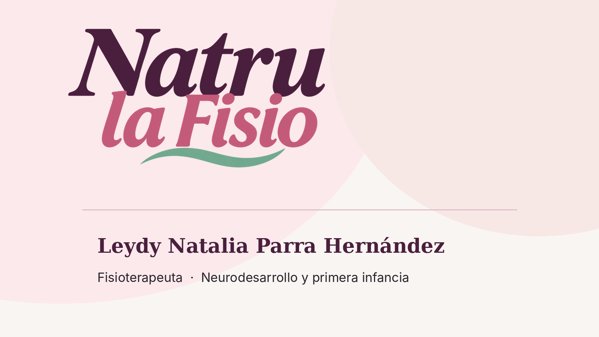
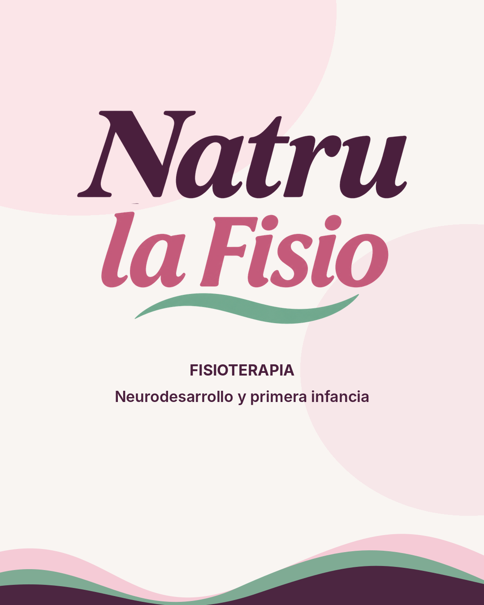

Reto
Presentar formación, prácticas, investigación y logros sin abrumar al visitante ni perder la personalidad de Natalia.
CASO DE ESTUDIO · BRANDING + FRONTEND
Diseñé la identidad de marca y desarrollé un portafolio web para Leydy Natalia Parra Hernández. El reto era unir logotipo, paleta, tipografía y una trayectoria clínica extensa en una experiencia clara y fácil de recorrer.

01 / CONTEXTO
No bastaba con crear una página atractiva: la identidad gráfica debía acompañar un recorrido profesional amplio, facilitar la lectura y ofrecer acciones claras.
Presentar formación, prácticas, investigación y logros sin abrumar al visitante ni perder la personalidad de Natalia.
Crear el logotipo Natru la Fisio, definir un sistema visual y organizar el contenido por secciones con navegación directa.
Una web publicada que reúne perfil, experiencia, investigación, formación, galería y contacto, con acceso al CV.
02 / IMPLEMENTACIÓN REAL
Estas decisiones se pueden consultar en los archivos HTML, CSS y JavaScript del proyecto publicado. No son funciones simuladas para esta presentación.
Secciones HTML5, navegación etiquetada, enlace «saltar al contenido», botón de menú con aria-expanded y cierre mediante Escape.
Interfaz con CSS para distintas anchuras, imágenes WebP con srcset y sizes, y carga prioritaria del retrato principal.
Seguimiento de la sección visible y estado activo mediante aria-current; barra de progreso de lectura actualizada con requestAnimationFrame.
JavaScript diferido, vídeos con preload="none", metadatos de página y Open Graph, y datos estructurados de perfil profesional.
03 / IDENTIDAD VISUAL
Una selección de materiales originales: versiones del logotipo y las decisiones cromáticas y tipográficas que dan unidad a la web. No es una galería con todas las variantes.


Ciruela para identidad y títulos, rosa como acento, verde salvia como detalle orgánico y marfil para superficies suaves. Montserrat aporta claridad a la interfaz; Playfair Display, carácter editorial a los títulos.
Ejemplos tipográficos explicativos; las muestras gráficas originales aparecen más abajo.
04 / EXPERIENCIA DE USUARIO
La web ordena la trayectoria profesional en un recorrido que funciona tanto para una consulta rápida como para una lectura detallada.
Portada, enfoque clínico y perfil profesional; el visitante entiende la especialidad desde el inicio.
Prácticas, investigación, formación y galería organizadas por temas reconocibles.
Accesos al CV y al contacto, evitando que la información importante quede escondida.
05 / DEMOSTRACIÓN REAL
Prueba la página real en un marco adaptable. Para evitar descargar dos veces el sitio, la vista interactiva se carga únicamente al pulsar el botón. Si tu navegador bloquea la integración, abre la web en una pestaña nueva.
Esta imagen es un material de presentación del proyecto, no una captura del navegador. Pulsa el botón para cargar la web auténtica.
La vista móvil reduce el ancho del marco a 390 px; el contenido proviene directamente de la web publicada. No es una captura simulada.
06 / MATERIAL SELECCIONADO
Además del banner y los dos logos mostrados arriba, estas tres piezas bastan para visualizar la paleta, la tipografía y una aplicación real en redes.



07 / RESULTADO Y APRENDIZAJES
El resultado se puede visitar y recorrer: no es únicamente un prototipo gráfico.
Menú accesible, estado de navegación, recursos responsive y carga progresiva documentados en el código.
Logotipo, color y tipografía se aplican de forma coherente a la web y a materiales de comunicación.
Evaluación responsable: no se atribuyen métricas de conversión, rendimiento o accesibilidad que no hayan sido medidas. Próximo paso opcional: documentar resultados de Lighthouse y capturas reales del sitio en dos dispositivos.
Explora la página final o regresa a mis otros proyectos de desarrollo.